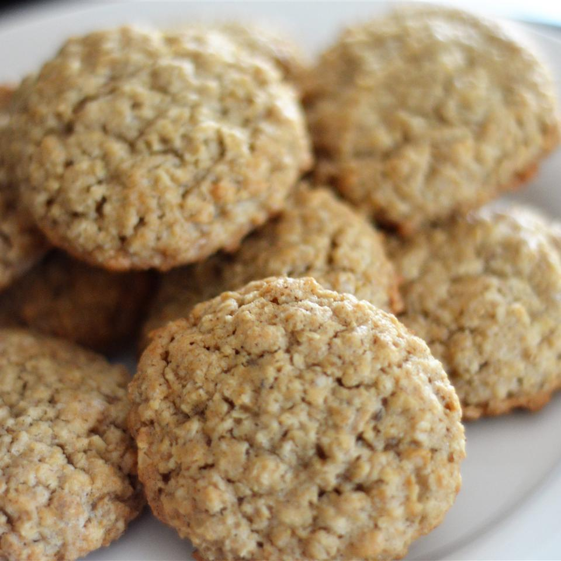

Oatmeal Cookies
Yummy, soft oatmeal cookies
Moist with good flavor. If desired, add a cup of raisins or nuts.
Ingredients
- Butter, softened - 1 cup
- Sugar, white - 1 cup
- Sugar, brown - 1 cup
- Eggs - 2
- Vanilla extract - 1 tsp
- Flour, AP - 2 cups
- Baking soda - 1 tsp
- Salt - 1 tsp
- Cinnamon, ground - 1 1/2 tsp
- Oats, quick cooking type - 3 cups
Recipe instructions
- In a medium bowl, cream together butter, white sugar, and brown sugar. Beat in eggs one at a time, then stir in vanilla. Combine flour, baking soda, salt, and cinnamon; stir into the creamed mixture. Mix in oats. Cover, and chill dough for at least one hour.
- Preheat the oven to 375 degrees F (190 degrees C). Grease cookie sheets. Roll the dough into walnut sized balls, and place 2 inches apart on cookie sheets. Flatten each cookie with a large fork dipped in sugar.
- Bake for 8 to 10 minutes in preheated oven. Allow cookies to cool on baking sheet for 5 minutes before transferring to a wire rack to cool completely.